Control Circuit 2026 › Tutorial › Chapter 5
In the previous chapter we saw how assigning wires to a Wire Group determines each wire’s potential (voltage), and how the Connectivity Engine (CE) validates every wire on a Sheet and across the whole Project. That was the groundwork for what comes next: Wire Numbering.
A wire number is the unique number attached to a core. It ensures correct assembly in the panel shop and reliable tracing in the field for fault finding and maintenance. Every wire should be identified, whatever standard you work to – it’s best practice and common sense.
Your house standard or prescribed method decides the numbering convention. Circuit gives you two ways to number: fully automatic, by way of Net Runner, which we’ll meet shortly, or manual, where you stay in control of every number.
Numbers are assigned per Net, whether or not a Net Name is applied: each physically contiguous network of wires carries one number until it reaches a component. Terminals can either act as a boundary or pass the number through, and that behaviour is a setting you can adjust: it is set per terminal group, in the Boundary column of the Terminal Groups dialog, and an individual terminal can override it.
How a number is built is defined by its Wire Group: a prefix, a starting number, an increment and a suffix. If your standard puts the sheet number in the wire number, such as 3-101 for the first wire on sheet 3, put {S} in the prefix and tick Restart / Sheet so each sheet starts again. A Net can run across several sheets, for example through Interruption Nodes that share a Net Name, and it still carries just one number on every sheet. That number takes the sheet of the earliest Wire Numbering Node on the Net (the lowest sheet number).
To annotate a wire number, use a Wire Numbering Node (WNN) from the Tool Palette. Drag a WNN onto the wire you want annotated – it must land on the wire itself. You can then slide it along that wire, but keep it on the wire.
Before numbering anything, let’s look at the Wire Group Definitions dialog. From here we define our numbering conventions, and each series of wires (each Wire Group) has its own start, prefix and suffix values. For our example project we’ll just stick with the defaults…
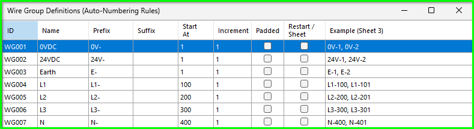
The Example column previews what each rule will produce before you number anything: L1, for instance, will give L1-100, then L1-101.
None of this next part is needed for our example project, so skim it for now and come back when your own standard asks for it. Just be aware though, the rules can get quite exotic if required…
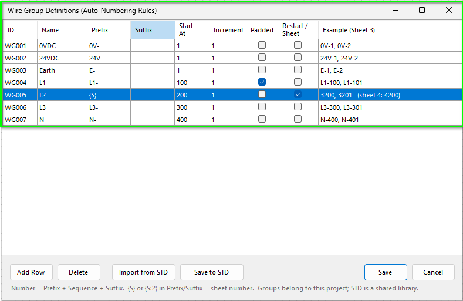
Here, L2 puts the sheet number in front of its sequence and restarts on every sheet, so sheet 3 starts at 3200 and sheet 4 at 4200. (In practice you would add a separator, such as {S}- in the prefix, so the result reads 3-200.)
First things first: drag a WNN onto a wire from the Tool Palette.
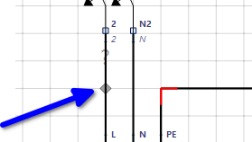
The WNN is placed Above the wire by default, and shows a ? until it has been numbered. Once placed, select it and choose Position: Left.
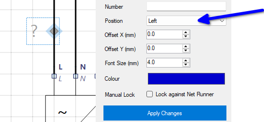
Using this technique, place sufficient WNNs on your circuit.
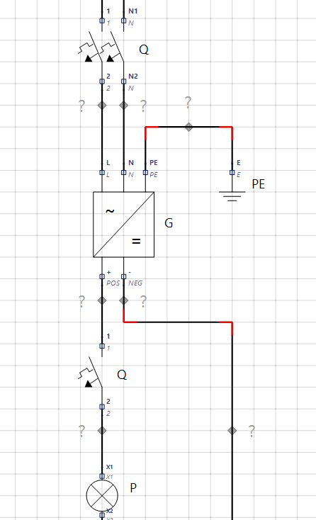
For fully automated wire numbering, tap F6 or choose Wiring › Net Runner Auto Numbering.
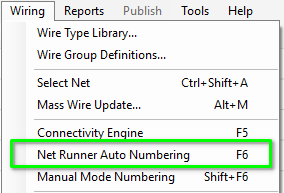
Once fired, you will get a prompt to proceed. Net Runner renumbers every unassigned WNN across the whole project, and leaves any manual override alone.
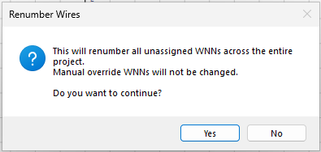
Once completed, you will get a dialog with the outcome status.
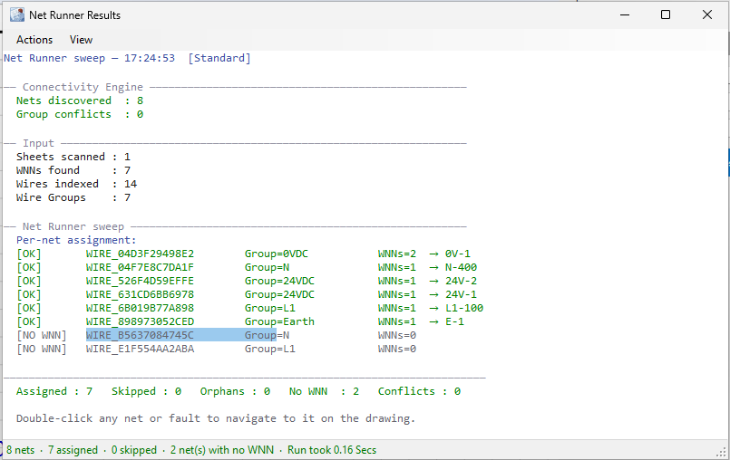
Notice the first row: that Net has two WNNs but only one number, 0V-1. Numbers belong to the Net, not to the WNN.
Note we also have 2 wires without WNNs – these, you should find, will be the End Cap wires to the 2P MCB. The moral here is to think carefully about the results and, as the dialog suggests, double-click the entry to navigate to the issue.
Double-clicking a NO WNN row takes you straight to the wire on the sheet and selects it.
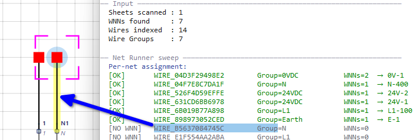
After Net Runner use, you will be prompted to save any sheet changes.
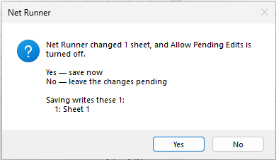
We have a text overlap showing, so just scoot the E-1 WNN off to the right.
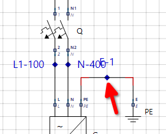
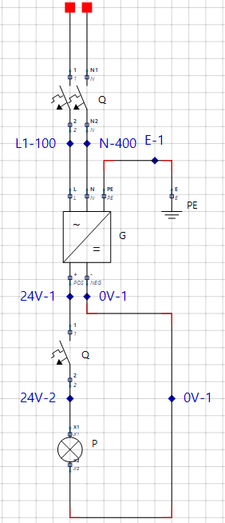
Notice the 24V wiring carries two numbers, 24V-1 and 24V-2: the MCB is a component, so it ends one Net and starts another. The two 0V-1 labels, on the other hand, sit on a single Net, so they share a number.
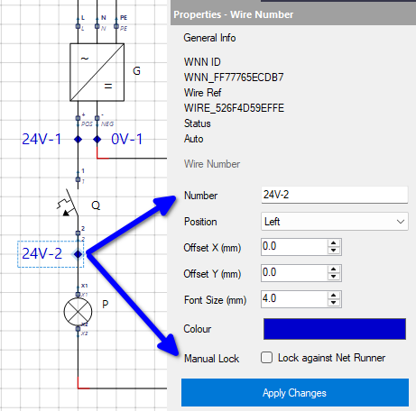
The alternative to Net Runner is Manual Mode, where you stay in charge of every number. From the Wiring menu choose Manual Mode Numbering (Shift+F6). What that gives us is a simple dialog with two main features.
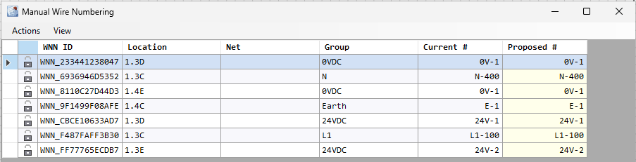
Nothing is written until you choose Commit Changes, and every number you change is then locked as a manual override. If you change your mind first, Reset All Proposed (Ctrl+Z) puts every Proposed # back to its current value. The Net column only shows a Net Name if you gave the wire one.
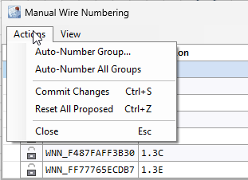
Manual Mode gives you complete granular control of wire numbers, ideal for small projects, projects that are of olden times and when some good old fashioned numbering therapy is in order.
Until the next chapter, the program’s help (F1) is the place to dig deeper into anything here; try searching for Net Runner or Manual Wire Numbering.